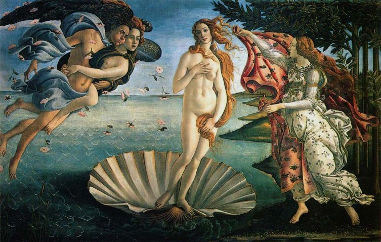

Conheça a história, os artistas, as características e a importância da preservação do patrimônio artístico relacionado ao Rococó no Brasil.
Explorar o projeto →
Descubra o Rococó através de diferentes perspectivas.
Entenda onde surgiu o Rococó, como ele se desenvolveu e como suas referências chegaram ao mundo luso-brasileiro.
ConhecerConheça Watteau, Boucher, Fragonard e Tiepolo e descubra suas contribuições para a arte rococó.
Ver artistasDescubra por que preservar obras, igrejas e conhecimentos relacionados ao patrimônio cultural é tão importante.
Preservar